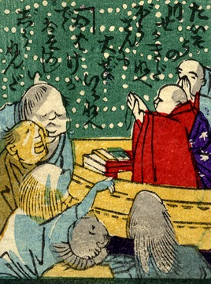

川；カワ

船に乗った僧侶が懸命に祈っている。船の廻りを4体の化物が囲んでいる。いずれも髪を振り乱して船にすがっているようだ。詞書には「たいそうの川施餓鬼だねえ。坊さんも大勢いるねえ。お化けがでて恐ろしい執念だ」とある。
著作者：芳幾近二／出典：親書誌：U426_nichibunken_0229：新作おばけ野噺；シンサクオバケノバナシ／日付：2010／資源識別子：U426_nichibunken_0229_0025_0000
Copyright (c)2010- International Research Center for Japanese Studies, Kyoto, Japan. All rights reserved.